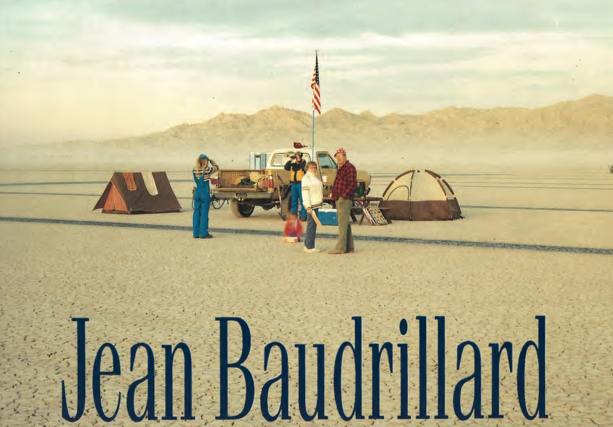
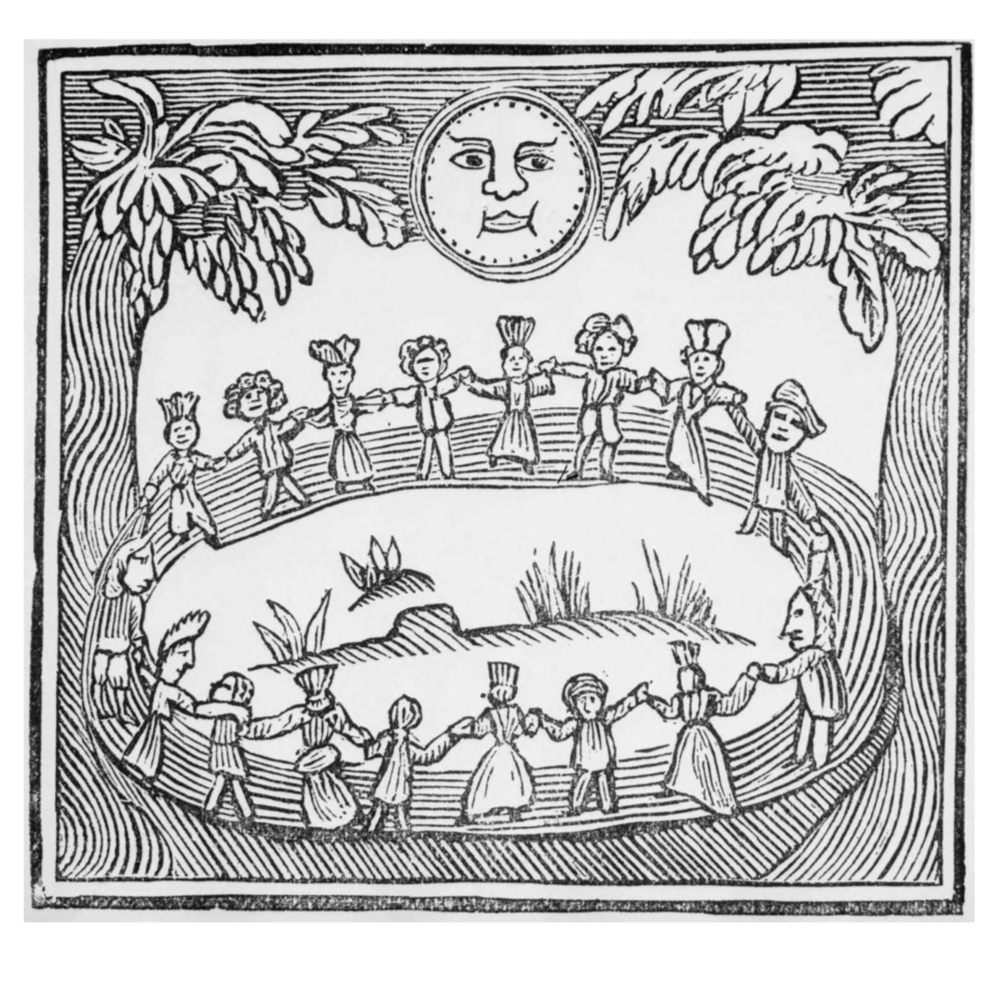
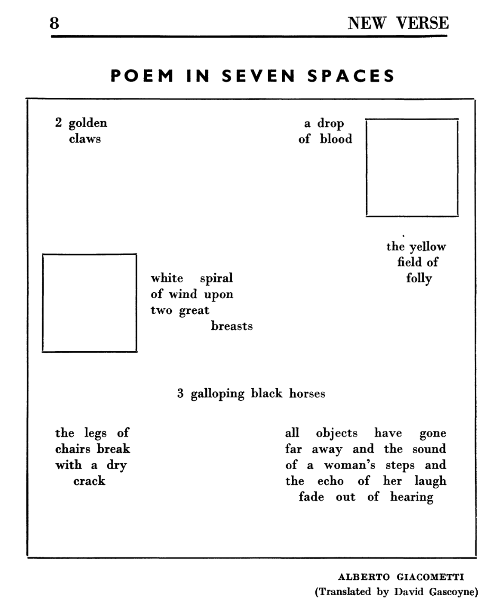

Peckham
Poetry
Group
Poetry
Group
/// PPG
PPG 008
Vanishing Point
"The unfolding of the desert is infinitely close to the timelessness of the film." "All techniques meant to unleash forces are techniques of disappearance." Baudrillard, Virilio.

PPG 008
PPG 007
Waves
The most open brief we've had. Waves: nautical, gravitational, quantum, interpersonal. Virginia Woolf, Eugenio Montale, Fernando Pessoa, Matsuo Bashō, Wisława Szymborska, Alice Oswald, Lucretius, and member work. "My yearnings burst into foam." "The useless trail of smoke behind a steamer."
"It can be the nautical kind. It can be gravity waves or wave-particle duality waves. It can be our interpersonal tidal forces."

PPG 006
Weird and Wayward Sisters
Rebecca Tamas, thesunthesunthesun. Hexes, spells, and the occult feminine in poetry. Women poets working at the edges of the permissible, in language, in form, in subject.

PPG 006
PPG 005
Modernism and Mysticism
AE's transcendent visions, Natural Magic, the Theosophists, The Quest Periodical. Dylan Thomas, Eva Gore-Booth. Surrealism, automatic writing, the unconscious as creative space. Rilke: "You must change your life."

PPG 005